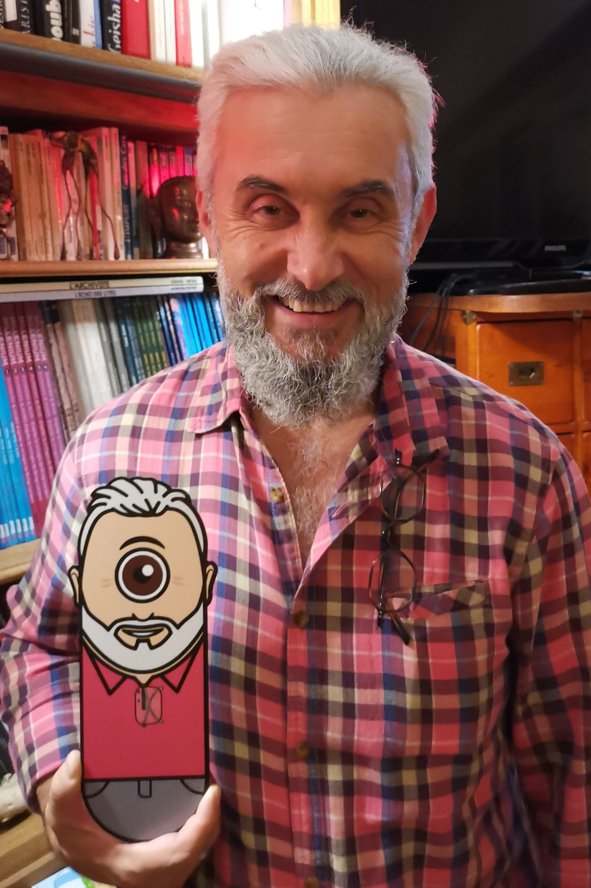

Il faut en parler !
Elle a envoyé leur photo et le descriptif de chacun aux Toki...
Ils ont réussi à les gélulifier !

Pierre a reçu une gélule à son effigie...
Un cadeau très personnel et tellement original !
Ressemblant non ? Jusque dans le détail des lunettes accrochées !
Un cadeau très personnel et tellement original !
Ressemblant non ? Jusque dans le détail des lunettes accrochées !
"Bolduk", "Em'arts et l'Atelier du canal", "Marie-Claire" "Fluxus", "Arkuchi", "Peinture Fraîche Festival"...
Tous écrivent sur nos deux Toki en termes élogieux.
Ils sont ingénieux, très imaginatifs et surtout tournés vers les autres...
- Article du Progrès du 23/12/2019
- Article du Progrès du 09/01/2020
- Article du Progrès du 05/05/2020
- Article de Décines Mag de février 2021, page 23
- Article du Progrès du 05/03/2021
- Article de Marie-Claire de mai-juin 2021
- Article du Progrès du 10/07/2021
- Article du Progrès du 22/12/2022
- Article de Art de Lyon
- Article de Peinture Fraîche Festival 2022
- Article de la galerie Em'arts et de l'Atelier du canal 2022
- Article de Grain de Sel de mai 2022, page 40
- Article de C'Beau du 24/10/2022
- Article de Arkuchi de juin 2022, page 37
Nous pouvons aussi
mettre des visages sur nos Toki !
Les Toki sont partout !
Sur les murs dans nos rues en France,
mais aussi en Espagne,
au Royaume-Uni, en Irlande,
en Inde, au Sri Lanka,
en Norvège, en Suède, en Hongrie,
en Italie, en Grèce.
On attend impatiemment leurs voyages à venir !